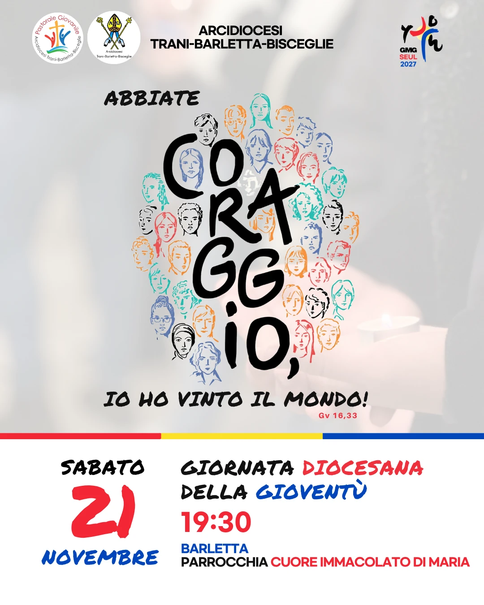

Iscrivi la tua parrocchiaModulo riservato alle parrocchie
Il messaggio del PapaLeone XIV per la XLI GMG
L'iscrizione la fa la parrocchia per tutto il gruppo: chiedi al tuo educatore o al tuo parroco.